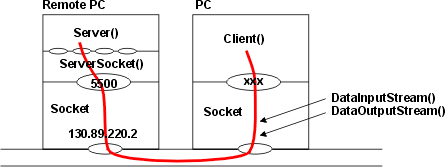

Een voorbeeld programma van een server is:
| import java.awt.*;
import java.net.*; //sockets import java.io.*; //DataIOStreams public class Server extends Frame
public Server()
public void runServer()
class MyWindow extends java.awt.event.WindowAdapter
public static void main(String[] args)
|
Een programma voor de client ziet er als volgt uit:
| import java.awt.*; //abstract windowing toolkit
import java.net.*; //networking import java.io.*; //DataIOStreams public class Client extends Frame
public void runClient()
class MyWindow extends java.awt.event.WindowAdapter
public static void main(String[] args)
|
Opgave 1
Maak een nieuwe directory en kopieer de Server.java en Client.java.
Compileer beide programma's.
Ga naar de command prompt en toets in:
c:\javaw Server
Verplaats het server window. Click in het command window en toets in:
c:\java Client
Hetzelfde kun je bereiken door een tweede command window te openen.
In het ene window start je de server, in het andere de client.
Leuker is natuurlijk tussen twee computer te communiceren. Daartoe moet je de naam of IP-adres van de server weten. Dit kun je in een command-window opvragen met:
c:\ipconfig /all
Opgave 2
Vraag een teamlid of hij als server wil fungeren en test het programma
tussen twee computers. Vraag een derde teamlid of hij ook even als client
wil optreden. En een vierde...
Opgave 3
Leuker is natuurlijk als je echt tussen twee computers kunt communiceren.
Verdeel daarom je team in koppels. Kies een (server) poortnummer waarvan
je denkt dat geen van de andere koppels die zullen kiezen. Spreek met elkaar
af wie de server maakt en wie de client maakt. Bespreek een protocol om
de sessie te beëindigen. Zet de DataInputStream en DataOutputStream
bij de attributen van je Server c.q. Client, zodat elke methode/class erbij
kan Voeg een actionPerformed toe om zelf tekst in te voeren. Heb je een
thread nodig om het proces van zenden en ontvangen te scheiden?